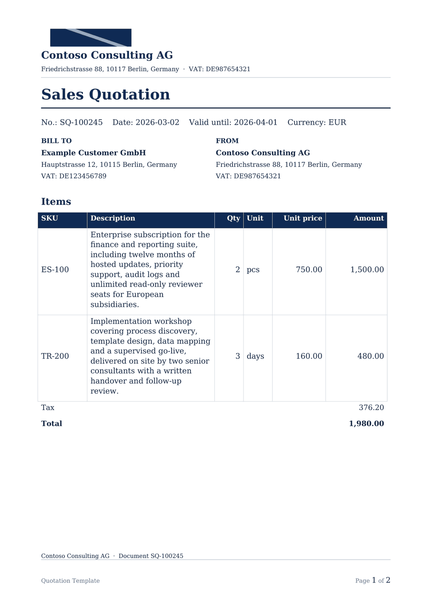
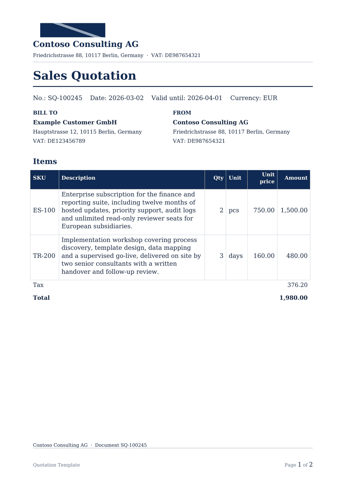
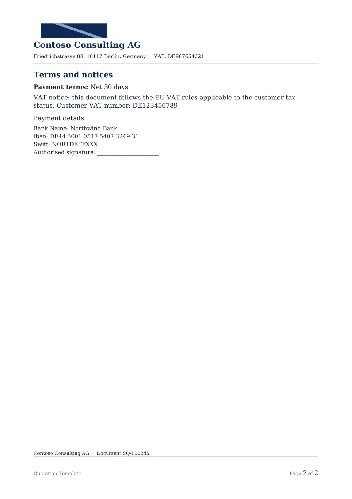

Visual regression · quotation-long-items
long_descriptions · generated 2026-11-04T10:45:01.812143Z
warning warning for 16 check(s); 2 check(s) not checked
New critical defects: 0 · not checked: 2
Scope. LibreOffice rendering (not Word fidelity). This is not Microsoft Word fidelity and not a Docentric AX proof.
Checks marked not_checked were not performed; they are not passes. The report never claims “all passed”.
Summary
Page count: 2 → 2 · IR digest before 933462042466c818… · after e5f759f3295d5c31…
Layout fixes: 2 · unresolved warnings: horizontal_overflow: 1 · new critical defects: 0 · not checked: vertical_overflow (page 1), vertical_overflow (page 2)
Quality before: warning · after: passed
Layout fixes applied before the after render
fit_text_widthwidened Description from 62.0 mm to 88.7 mm by rebalancing the other columns (62.0 → 88.7)fit_text_fontreduced the table font from 9.5 pt to 9.0 pt (9.5 → 9.0)
IR-level checks
| Check | Status | Observation |
|---|---|---|
| page_count | passed | page count stayed at 2 |
| text_fit | passed | text_fit improved from warning to passed |
Pages
Page 1 warning


| Check | Status | Observation |
|---|---|---|
| blank_page | passed | the page contains ink |
| horizontal_overflow | warning | ink extends 1.9 mm outside the left/right text box (within the 5 mm table-border tolerance) |
| page_edge_ink | passed | no ink within 2 mm of a page edge |
| header_present | passed | header text found in the top band |
| footer_present | passed | footer text found in the bottom band |
| footer_page_number | passed | the compiler page number is present |
| page_geometry | passed | page aspect 0.707 matches 210×297 mm |
| vertical_overflow | not_checked | vertical body overflow cannot be separated from running header/footer ink Reason: the compiler places headers and footers in the top/bottom margin; distinguishing body overflow from running content needs Word-level layout data |
Page 2 passed


| Check | Status | Observation |
|---|---|---|
| blank_page | passed | the page contains ink |
| horizontal_overflow | passed | no ink outside the left/right text box |
| page_edge_ink | passed | no ink within 2 mm of a page edge |
| header_present | passed | header text found in the top band |
| footer_present | passed | footer text found in the bottom band |
| footer_page_number | passed | the compiler page number is present |
| page_geometry | passed | page aspect 0.707 matches 210×297 mm |
| vertical_overflow | not_checked | vertical body overflow cannot be separated from running header/footer ink Reason: the compiler places headers and footers in the top/bottom margin; distinguishing body overflow from running content needs Word-level layout data |
Limitations
- LibreOffice rendering (not Word fidelity)
- Not Microsoft Word fidelity; LibreOffice substitutes fonts and paginates independently.
- Not a Docentric AX rendering or compatibility proof.
- Vertical body overflow is not checked because running headers/footers occupy the margins.
- The header/footer band heuristic is deterministic but approximate.